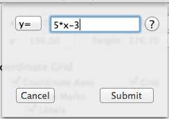
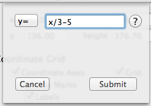

GraphPouch recognizes for seven different operators in addition to numbers. They are:
Use these symbols in the Equation dropdown to create the equations that you want to graph in your worksheet. Below are some examples of each of the symbols being used.
| Addition | + |
| Subtraction | - |
| Multiplication | * |
| Division | / |
| Exponents | ^ |
| Open Parenthesis | ( |
| Closed Parenthesis | ) |
Use these symbols in the Equation dropdown to create the equations that you want to graph in your worksheet. Below are some examples of each of the symbols being used.
Addition
Equation using addition symbol
Subtraction
Equation using subtraction symbol
Multiplication

Equation using multiplication symbol explicitly
It should be noted that the multiplication symbol can be omitted and GraphPouch will automatically insert a multiplication symbol between the number and the variable.
Equation using multiplication symbol implicitly
Division

Equation using division symbol
Exponents
Equation using exponent symbol
Parentheses

Equation using parentheses
Equation Error
Equation with mismatching parentheses
If GraphPouch cannot recognize the equation or there are terms missing then it will respond with a message noting the error.